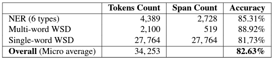

-
WSD Pipeline: Given a sentence as input, each word is tagged with its: Lemma, single-word sense, multi-word sense, and NER. The sense disambiguation is done using our ArabGlossBER TSV (see Article). The lemmatization is done using Alma and the NER using Wojood.
ArabGlossBERT TSV dataset: 167K context-gloss pairs, labeled with True/False, to train a TSV model (see Article). The dataset was also augmented with more pairs (See Article).
Salma Corpus: manually sense annotated corpus (34K tokens), (See Article).
Accuracy: The accuracy of the WSD pipeline (i.e., an end-to-end system including, NER, and single/multi-word WSD) is 82.63% (See Article).
-
Download the WSD Pipeline which is part of SinaTools.
Download the ArabGlossBERT TSV fine-tuned model from (Hugging Face) that we tuned using the ArabGlossBERT dataset. Download other TSV models that we tuned using augmented datasets from (Hugging Face).
Download the code we used for fine tuning from (GitHub).
Download SALMA (sense annotated corpus and model, ~34K tokens). -
Evaluation of SinaTools WSD moduleWe benchmarked SinaTools using the Salma corpus, which is a sense-annotated corpus, consisting of three levels: single-word sense annotations, multi-word sense annotations, and NER tags. See article [1] for the details.

-
Tymaa Hammouda, Mustafa Jarrar, Mohammed Khalilia: SinaTools: Open Source Toolkit for Arabic Natural Language Understanding. In Proceedings of the 2024 AI in Computational Linguistics (ACLING 2024), Procedia Computer Science, Dubai. ELSEVIER.
Mustafa Jarrar, Sanad Malaysha, Tymaa Hammouda, Mohammed Khalilia: SALMA: Arabic Sense-Annotated Corpus and WSD Benchmarks.In Proceedings of the Arabic Natural Language Processing Conference (ArabicNLP 2023), Singapore. 2023
PDF - Slides
Sanad Malaysha, Mustafa Jarrar, Mohammad Khalilia: Context-Gloss Augmentation for Improving Arabic Target Sense Verification. The 12th International Global Wordnet Conference (GWC2023), Global Wordnet Association. (pp. ). San Sebastian, Spain, 2023
PDF - Slides
Moustafa Al-Hajj, Mustafa Jarrar: ArabGlossBERT: Fine-Tuning BERT on Context-Gloss Pairs for WSD. In Proceedings of the International Conference on Recent Advances in Natural Language Processing (RANLP 2021). PP 40--48, 2021
PDF - Slides - Video
Moustafa Al-Hajj, Mustafa Jarrar: LU-BZU at SemEval-2021 Task 2: Word2Vec and Lemma2Vec performance in Arabic Word-in-Context disambiguation. In Proceedings of the Fifteenth Workshop on Semantic Evaluation (SemEval2021) Task 2: Multilingual and Cross-lingual Word-in-Context Disambiguation (MCL-WiC). PP 748--755, Association for Computational Linguistics. 2021